Heygo 是滑雪 AI 智能穿戴。两只夹在雪鞋上的传感器，加上自研算法和 AI 陪伴搭子，把一天的滑行拆到每一个弯，告诉滑手这一趟哪里好、下一趟练什么。
Heygo 专注于为冬季运动打造 AI 运动指导系统，以单板滑雪作为第一个核心场景。我们把高精度动作传感器和自研 AI 分析引擎结合，实时捕捉雪板立刃、受力和节奏，在滑行中给出语音反馈，滑行后给出逐弯复盘和练习建议。
我们不做只会记录数据的设备，也不替代真人教练。Heygo 的角色是 AI 陪伴搭子（Progress Partner）：在课程之外、每一次自己上雪时，陪滑手看清自己、看清动作、定位问题，帮助持续进步。对教练和俱乐部来说，它是课堂的延伸：课上学的动作，课后有数据持续跟踪。
| 品牌 | Heygo（heygo.ai） |
| 运营主体 | 深圳市比特天空科技有限公司；美国主体 Heygo, Inc. |
| 成立 | 2025 年，已完成天使轮融资 |
| 办公地点 | 总部深圳南山；香港、美国、新西兰设有分部 |
| 品类 | 滑雪 AI 智能穿戴（硬件 + App + Pro 订阅） |
| 首款产品 | Heygo S1：单板双脚传感器 + Heygo App，2026 年 10 月全球开售 |
通过创新的硬件、软件和服务，帮助运动爱好者更好地掌握技术，更充分地享受运动乐趣，更深层地共鸣运动精神，更极致地探索无限可能。
成为卓越的运动智能科技公司，打造个人运动健康的智能身体入口，让运动变得更美好。
To make skiing better than we found it.
滑雪人群在增长，但滑手学技术、练技术的方式还停留在过去：贵，主观，没有反馈，也没有记录。
滑雪技术没办法被量化。一趟滑下来，滑得好不好只能靠感觉，或者等别人的一句评价。自己练的时候，不知道哪里做对了、哪里做错了；错误动作一遍遍重复，最后变成肌肉记忆。
两只传感器 + 充电盒 + 雪鞋固定夹。夹在单板雪鞋外侧，几秒扣上，不用工具。
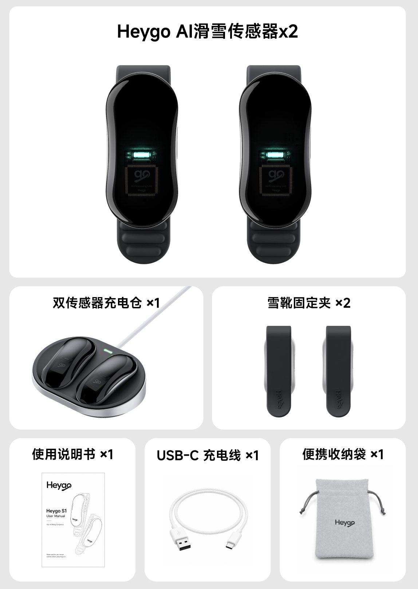
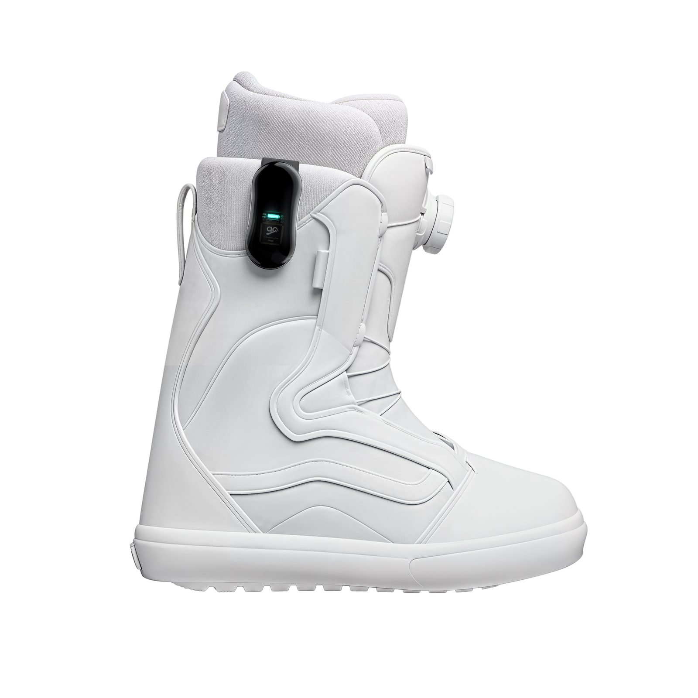
单板的核心信息在两只脚的差异里。立刃角、前后刃对称、甩板尾、换刃时机，都要两只脚一起算；传感器离雪板越近，越能测准板子真实在做什么。这是手表、手机 GPS 做不到的。
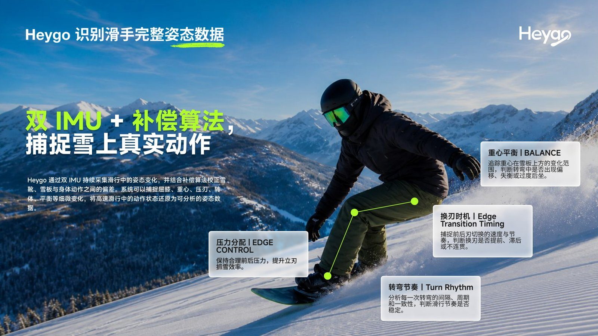
| 传感器 | 六轴 IMU（±16g、±4000 dps）+ 磁力计 + 气压计 |
| 主控与连接 | Nordic nRF54L15，低功耗蓝牙；两只设备各自直连手机，加密绑定 |
| 尺寸与重量 | 本体约 90 × 25 × 15 mm，本体加夹子约 43 g |
| 续航 | 单次约 5 天；配合充电盒可满足整月滑行 |
| 环境与可靠性 | IP67 防水，IPX8 第三方测试通过；−40 ~ 45 °C 环境压力测试通过；1.2 米六面十二角跌落通过；48 项可靠性矩阵签样 |
| 数据可靠性 | 断连时数据存在设备本地，重连后自动补传；没网也能滑 |
| OTA | 固件支持空中升级，持续迭代 |
| 认证 | FCC / ISED / CE RED / RoHS / REACH / WEEE / UKCA / SRRC / TELEC / UN38.3 等；国内 3C |
| 产品 | 状态 | 是什么 |
|---|---|---|
| S1 单板双脚传感器 | 在售 | 两只传感器 + 充电盒，夹在雪鞋外侧 |
| S1 双板模式 | 研发中 | 同一套 S1 装在双板雪鞋上；与国际考官共建标准，计划 2027 年初 App 上线双板模式 |
| S1.5 可穿戴动捕 | 规划 | 双脚 + 骨盆 + 胸口 4 个节点，看全身姿态 |
| S2 绑带版 | 规划 | 低成本多节点，同时服务单板、双板，兼容 VR 全身追踪生态 |
| 生态接入 | 预研 | 接入第三方心率等穿戴数据、AI 眼镜、跟拍无人机 |
一个完整的 AI 训练闭环：看得见、看得懂、说得出、记得住。iOS / Android 均已上线，支持中文、英文、日文。
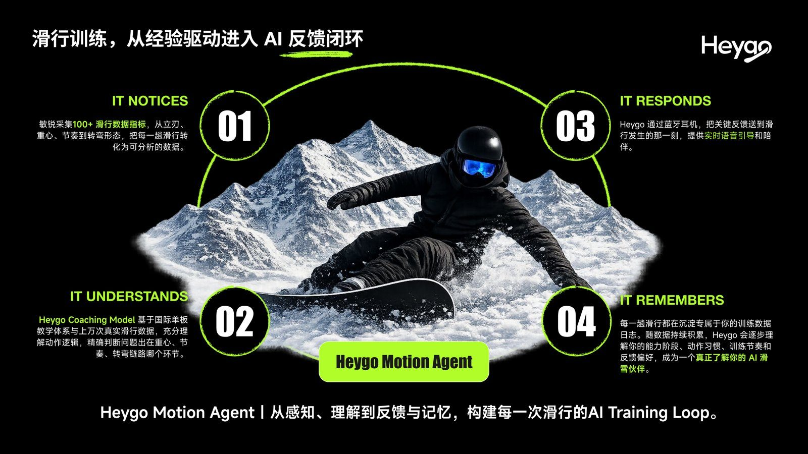
采集 100+ 数据维度，从立刃、受力、节奏到弯型，把每一趟变成可分析的数据。
基于国际单板教学体系和真实滑行数据，判断问题出在时机、施压、流畅度还是对称性。
滑行中蓝牙耳机实时语音；滑完给报告，还能和 AI 对话追问。
每一趟沉淀进个人训练档案，越用越了解这位滑手的阶段和习惯。
| 功能 | 用户得到什么 | |
|---|---|---|
| 实时语音 | 停下或坐缆车时，耳机里播报这一段最该纠正的一点；摔倒后关心提醒；可选详细 / 简洁 / 静音，支持中、英、日 | |
| 单趟报告 | 坐缆车上升自动切趟，约 1.5 分钟出报告；速度、距离、落差、转弯数，以及这一趟真正影响表现的关键片段 | |
| 逐弯分析 | 每个弯的立刃、施压、换刃时机、弯型；问题分前刃 / 后刃统计，帮用户找到弱侧 | |
| 完整弯型图 | 把整趟每个弯的真实轨迹画出来，标出换刃点和立刃峰值；好坏一眼看出 | |
| Heygo IQ | 满分 200 的技术分，按走刃和搓雪两条路线分别打分；四个维度：时机、施压、流畅度、对称 | |
| 动作识别模型 | 识别滑雪特征动作和滑法：搓雪小回转、搓雪中回转、搓雪大回转、走刃 Carving、S 弯、C 弯、J 弯、摔倒等，并持续扩充动作类型 | 已上线 |
| 高光时刻 | 自动找出今天最快、最顺、立刃最深的瞬间，带来成就感，方便分享 | |
| 当日报告与训练建议 | 结合全天和历史数据识别反复出现的问题，每次只给一个最该练的点，配练习方法和教学视频 | |
| Ask Heygo（AI 对话） | 带着这一趟、这个弯的上下文追问：「为什么我左边还是弱？」「下一趟怎么练？」 | |
| 课程库 | 100+ 单板训练课程：站姿、重心、施压、换刃、走刃、C 弯、S 弯、刻滑、滚刃等 |
按使用顺序：首页 → 单趟报告 → 片段 → 弯型图 → Heygo IQ → 当日报告 → 滑行中语音 → 里程碑。想亲手点一点，可以打开 App 在线体验版（生产版界面 + 演示数据，手机、电脑都能打开）。
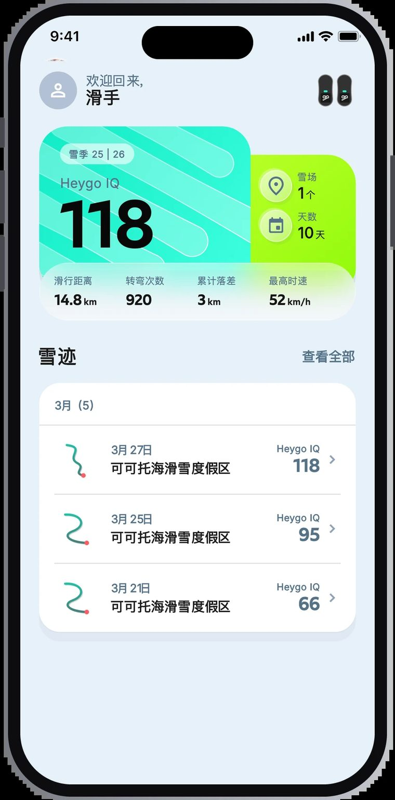
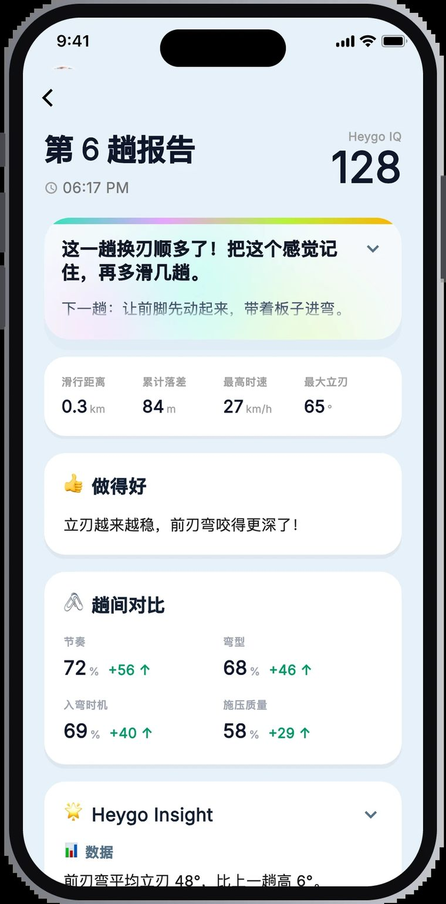
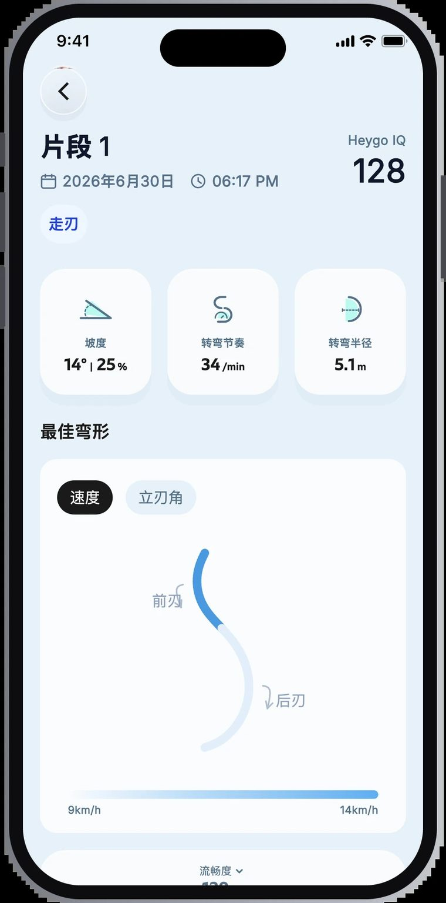
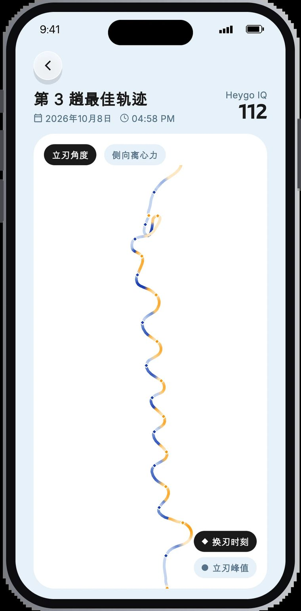
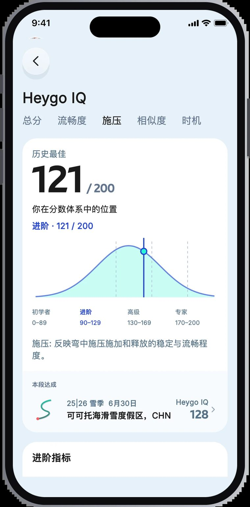
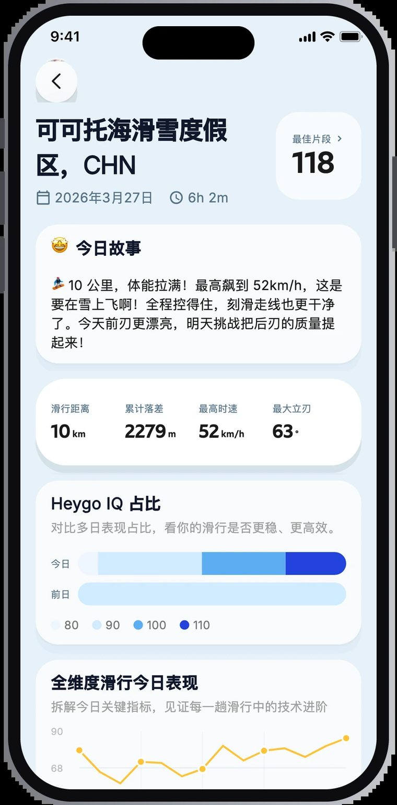
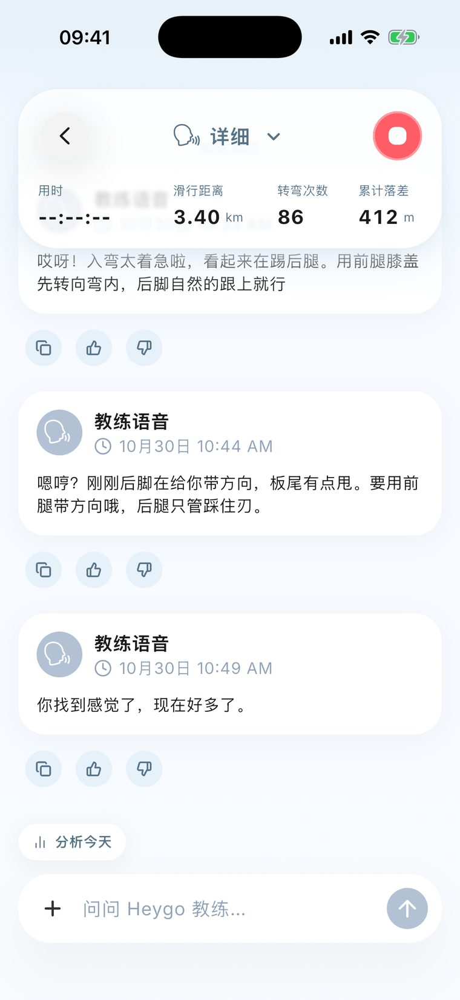
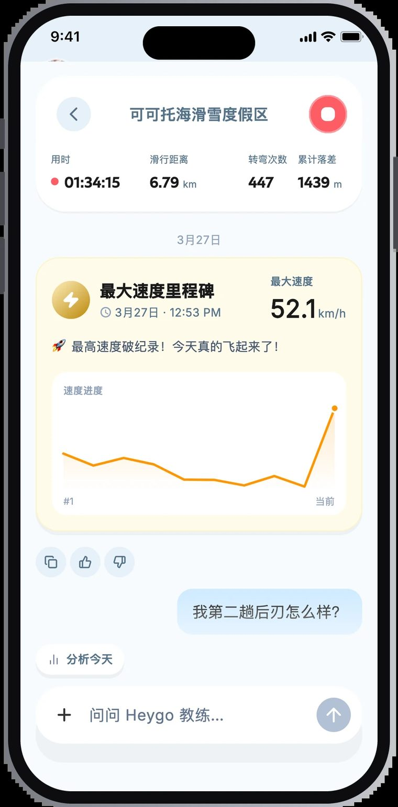
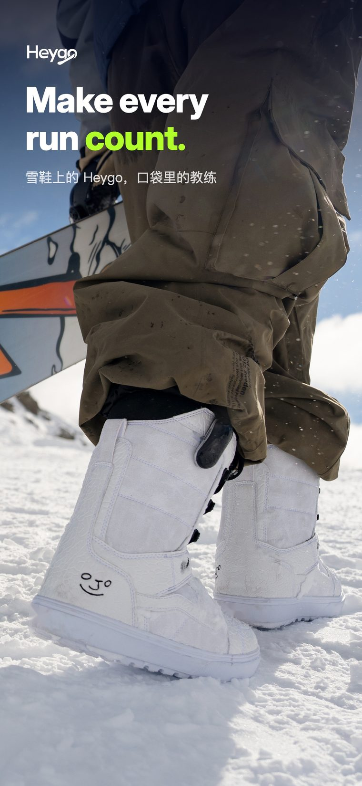
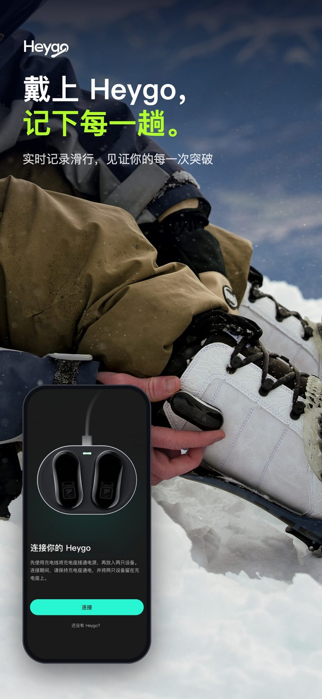
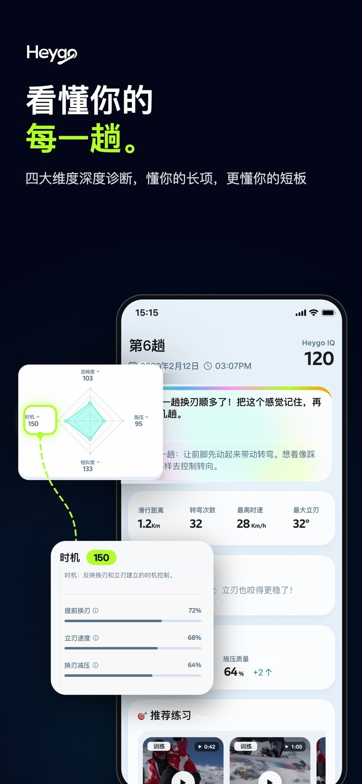
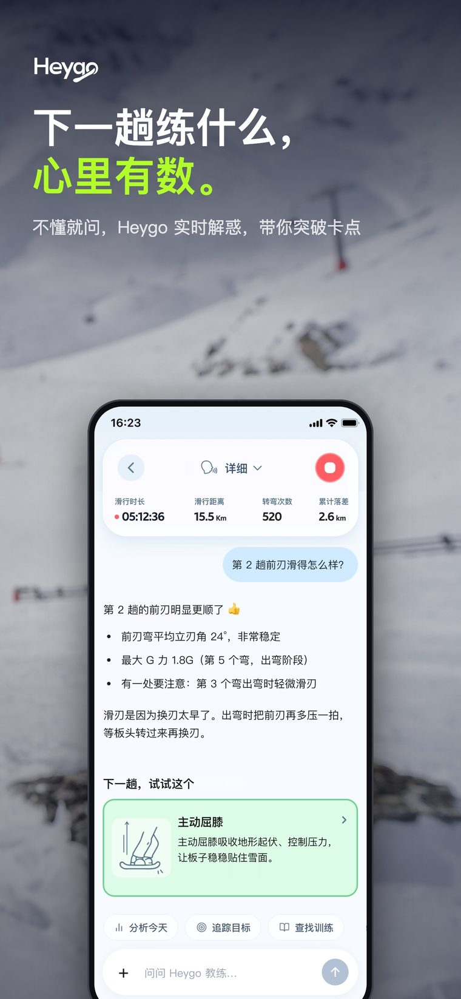
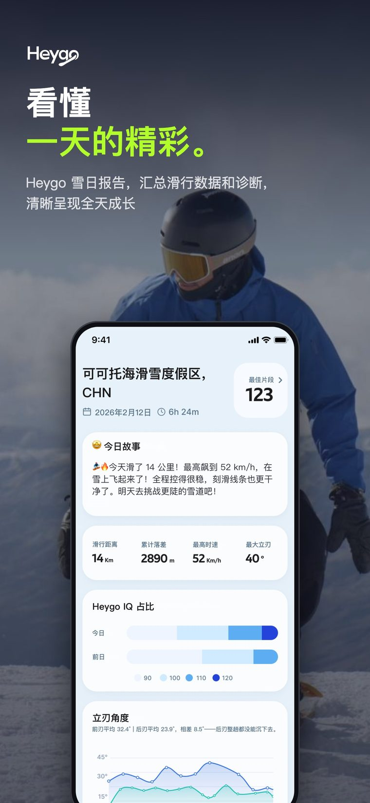
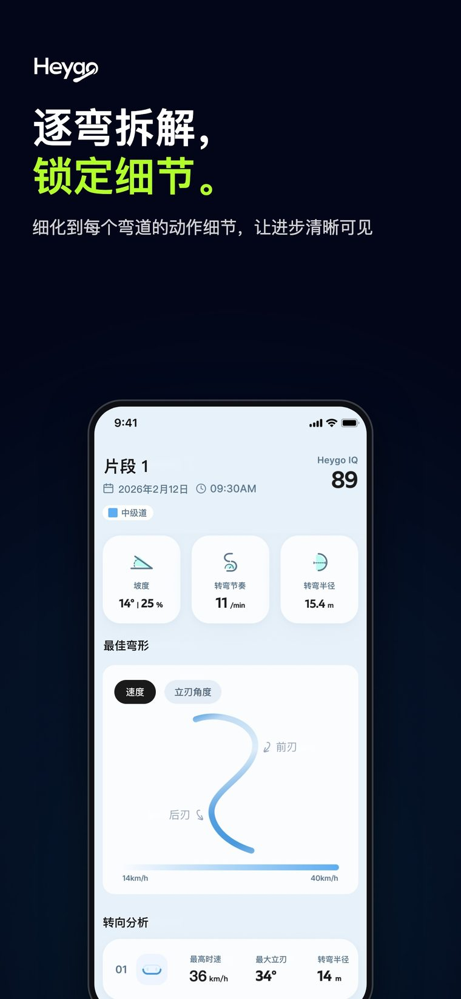
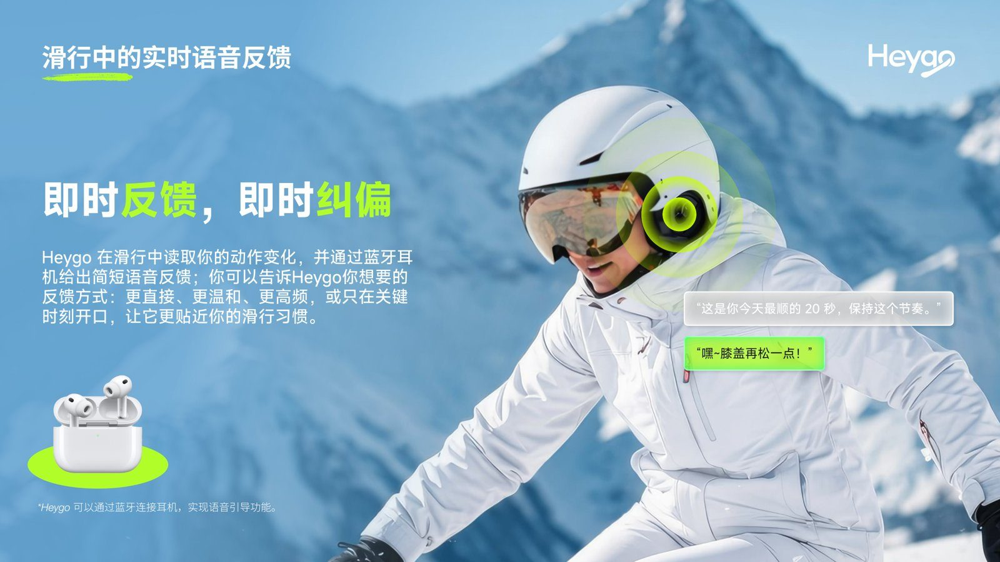
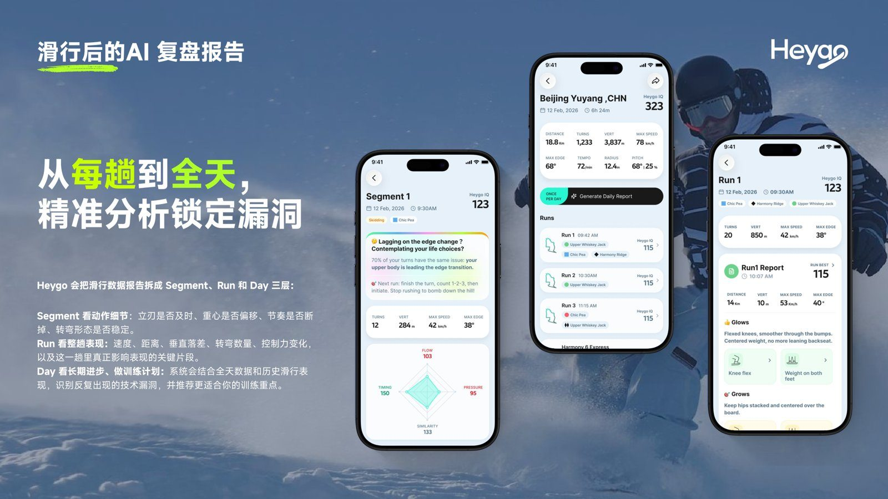
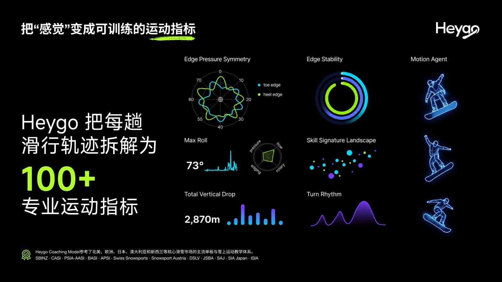
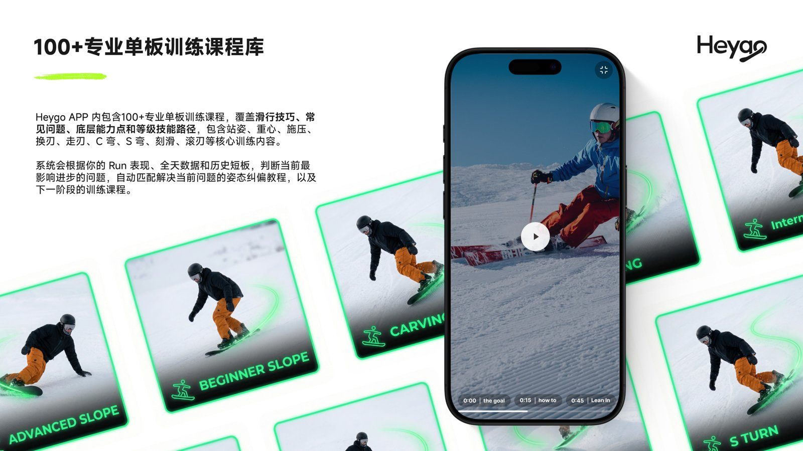
扫包装盒上的二维码，按地区和手机系统自动下载对应版本；盒码与 SN 一一对应。
自动识别戴在哪只脚、内侧还是外侧，无需手动设置；滑几个弯自动完成校准。
两区账号、数据、部署完全隔离，满足各地合规；中国区支持微信、支付宝直付。
| 项目 | 中国区 | 国际区 |
|---|---|---|
| S1 硬件 | ¥1,699 | $289 |
| Pro 订阅 | ¥98 / 月，¥398 / 年 | $59.99 / 月，$139.99 / 年 |
| 新用户权益 | 绑定设备赠送 6 个月 Pro；免费版每雪季前 10 个雪日有 AI 报告 | 绑定设备赠送 6 个月 Pro；免费版有每日额度 |
全渠道统一控价。实时语音、AI 报告、AI 对话、训练计划等持续迭代的能力在 Pro 中提供。
Heygo 的核心是一套全链路自研的运动感知与教学算法体系：从脚上的原始信号，到校准、切弯、指标、评分、问题识别、弯型呈现，再到 AI 的教学表达。核心运动解算不依赖第三方基础大模型。
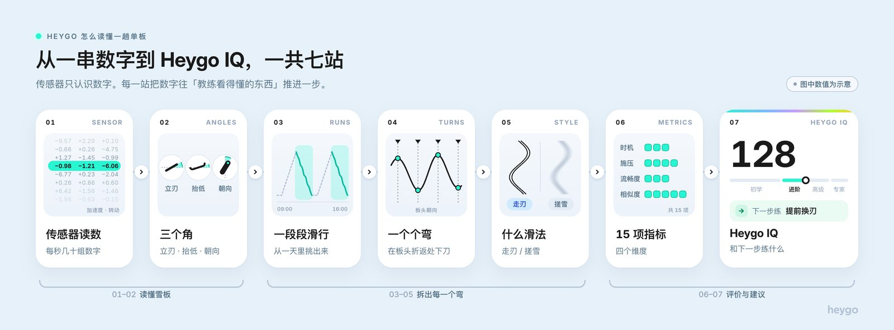
自动识别左右脚、内外侧；滑几个弯自动求出传感器与雪板的相对方向，设备挪位后几秒内重新收敛。
气压计识别坐缆车自动切趟；切出每一个弯，分入弯、弯中、出弯，标前刃 / 后刃。
立刃角、换刃时机、施压、弯型圆润度与闭合、转弯速率、前后刃相似度等，输出 100+ 数据维度。
识别搓雪小回转、搓雪中回转、走刃、滚刃、刻滑 5 类场景，用不同的尺子打分；分数随水平单调上升。
甩板尾、缺少上半弧、换刃犹豫、立刃不稳定等常见问题，分前刃 / 后刃统计，一趟只给一个最该练的点。
把结果变成听得懂、用得上的一句话、一份报告、一次对话。
| 能力 | 做什么 | 状态 |
|---|---|---|
| 滑行状态识别 | 区分滑行、走路、坐缆车、静止，找出有效滑行段 | 已上线 |
| 模型校准 | 求传感器相对雪板的方向，规则校准升级为模型校准，精度显著提升 | 已上线 |
| 佩戴方向自适应 | 自动识别内侧 / 外侧、左右脚；经上千场真实数据验证 | 已上线 |
| 速度模型 | 只用脚上传感器推算速度，以 RTK 高精度定位为训练标签 | 已上线 |
| 形变与坡度 | 修正雪鞋与雪板之间的形变，算准立刃角；有无 GPS 都能估坡度，室内雪场同样适用 | 已上线 |
| 场景识别与 Heygo IQ | 13 项指标归入时机、施压、流畅度、对称四个维度，分场景评分；覆盖新手到教练 | 已上线 |
| 高光时刻 | 自动发现最快、最顺、立刃最深的瞬间 | 已上线 |
| 摔倒与松动检测 | 摔倒后关心提醒；识别设备松动、滑落并切换另一只脚的有效数据 | 已上线 |
| 端侧实时 SDK | 手机上实时出趟、出 IQ、识别问题、触发语音，没网也能用 | 已上线 |
| 双板全链路 | 左右板分别校准、逐弯指标、技术阶段识别（犁式到卡宾）、双板 IQ | 研发中 |
| IMU 基础模型 | 用大规模滑行数据做自监督预训练，探索 IMU 与视频跨模态对齐 | 研发中 |
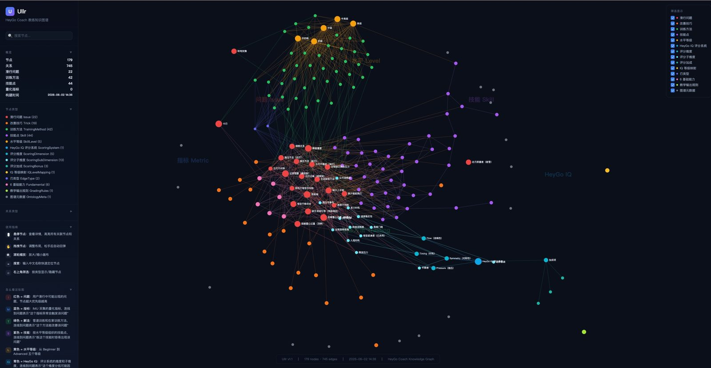
累计采集滑行数据，覆盖室内雪场与新西兰、日本、中国等室外雪场。
RTK 高精度定位真值、板载 IMU 真值，用于校准和速度评估。
视频与传感器逐弯对齐，教练在标注平台逐弯打标，作为算法校验标准。
与国际考官共建双板标准数据（考官示范 + 视频 + 考官评分），用于双板 IQ 定标。
| 名称 | 状态 | 保护什么 |
|---|---|---|
| 安装位置自适应的双足惯性滑雪状态识别方法及系统 | 2026-09 受理，已请求实审 | 随手佩戴即可，自动识别安装位置与滑行状态 |
| 单双板通用的双足与雪板坐标系在线校准方法及系统 | 2026-09 受理，已请求实审 | 滑行中在线完成脚与雪板坐标系校准，安装偏移后自恢复；单板、双板通用 |
| 基于惯性测量单元的滑雪转弯检测与量化方法及系统 | 2026-09 受理，已请求实审 | 逐弯检测与量化，是逐弯指标、Heygo IQ 和问题识别的基础 |
| 滑行完整弯型的生成与呈现方法及系统 | 正式稿完成，进入申请流程 | 把一段滑行的多个弯按真实形状连成完整弯型，标注换刃点、立刃峰值 |
| 硬件结构及外观专利 | 已获批 | 硬件外观结构及传感器在雪鞋上的固定方式 |
单板的关键信息在两只脚的差异里；我们是最早把双脚传感器做成量产消费产品的团队之一。同一套硬件覆盖单板与双板。
硬件、固件、端侧 SDK、云端算法、AI 一体化，迭代快，体验端到端优化。
国际考官与教练参与教学体系和算法定标，结果对得上教练的眼睛。
创始团队来自字节跳动、腾讯、大疆，覆盖增长与商业化、产品与软件、AI 算法、硬件四条线。全员滑雪爱好者，约 60% 持 CASI / AASI / SBINZ / JSBA 教练认证。
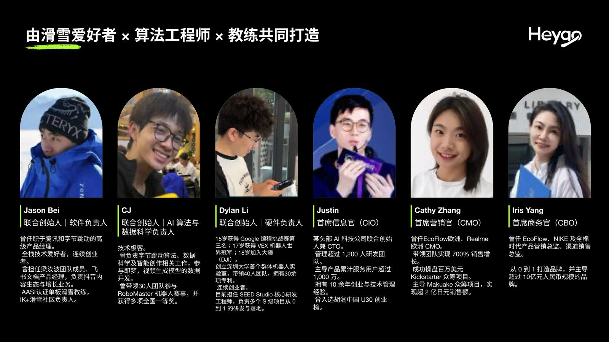
前字节跳动飞书区域业务负责人、用户增长负责人。2019 年联合创立 vika（维格表）并任 CMO，主导增长与市场从 0 到 1。8 年创业经验、6 年单板滑雪经验，持 CASI 认证。
曾任腾讯、字节跳动高级产品经理；飞书文档创始产品经理，负责过抖音内容生态与增长业务。AASI 认证单板滑雪教练，IK+ 滑雪社区负责人。
曾负责字节跳动 Seedance 算法、数据科学及智能创作相关工作，参与即梦视频生成模型的数据开发。曾带领 30 人团队参加 RoboMaster 机器人赛事，获多项全国一等奖。
17 岁获 VEX 机器人世界冠军，18 岁加入大疆。创立深圳大学首个群体机器人实验室，拥有 30 余项专利；负责过多个 S 级硬件项目从 0 到 1。
某头部 AI 科技公司联合创始人兼 CTO，管理超过 1,200 人研发团队，主导产品累计服务用户超过 1,000 万。
曾任 EcoFlow 欧洲、Realme 欧洲 CMO，带领团队实现 700% 销售增长；操盘百万美元级 Kickstarter 众筹、超 2 亿日元的 Makuake 众筹。
曾任 EcoFlow、NIKE 及全棉时代产品营销总监、渠道销售总监，主导过超 10 亿元人民币规模的品牌业务。
AI 深度融入研发与运营的每个环节。同一支小团队在一个季度里完成硬件量产、App 中国区与国际区双区上线和全渠道开售。
教学体系和算法定标由来自加拿大、美国、瑞士、新西兰、日本、中国的考官与教练共同参与，覆盖 CASI、AASI、SBINZ、NZSIA、Swiss Snowsports、JSBA、SAJ 等主流教学体系。
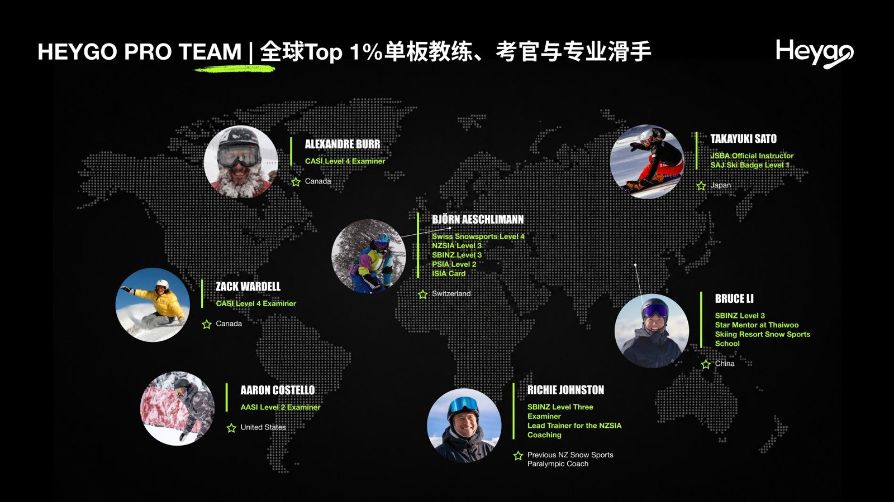
我们把内测访谈、用户群、教练和 KOL 体验中的原话逐条记录归类，目前已有 160+ 条。用户最认可的两件事：数据维度多，以及测得准。
「朋友会说客套话，教练会鼓励你，但是 Heygo 的数据不会骗我。」
内测滑手「它检测出来了。我前后刃弯型不对称，确实一直有这个问题……它叫我入弯先让膝盖往山下，这个它也有检测出来。」
中山单板教练「挺震惊的，它会说检测到我在滑行里面有抖动……可能因为你的腿太直，这个我是没想到它会识别到。」
KKAKIN · 滑雪教练「报告的文字不是什么很难的专业词汇，我的学生也都能看懂。」
KKAKIN · 滑雪教练「我把你们总结的段落发给我的教练看了，教练认为你们说的是很对的，也是我目前的问题。」
内测用户「它可以特别清晰地量化到立刃角度……有一些令我特别惊喜的数据，包括压力能测到。它可以往滑雪搭子方向成长，甚至比教练更了解我们。」
小白「你们的 AI 做得非常好，既不像通用聊天机器人那么啰嗦，又很精确。」
wll「弯型记录对我挺有帮助，结合 AI 的提示，我滑得越来越圆润了。」
张帅戈「每次中途休息看一眼，下一回就按推荐姿势调节，比之前自己回看视频方便准确很多。」
李芷筠「对立刃高度的变化是准确的，这趟我脚踝锁住，立刃确实更高。」
张琪「我以为重心是前 6 后 4，实际是 5/5 开……有数据支撑，就是牛。」
用户群「提示我换刃释放不要太快，施压不要太急……改完立马舒服了，分数也变高了。」
用户群「你们文字做得真的很好，目前没有听过教练讲出这一段话的。」
用户群「这个产品很轻便，基本属于无感。」
vivi"It is like having a coach in your pocket. Very easy to use too."
Dean Elis · 海外用户"It is very accurate. The app pinpointed exactly how I ride and built a profile."
Dean Elis · 海外用户"I could spend 300–400 on an app I can use every day vs 1,500 on one private lesson."
Dean Elis · 海外用户以下为用户群、体验活动群的原始截图，已隐去头像和昵称。
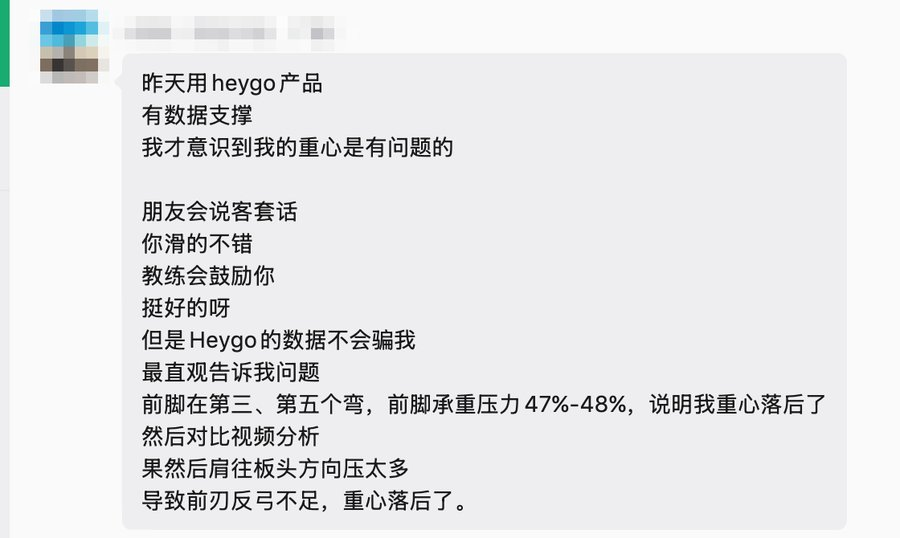
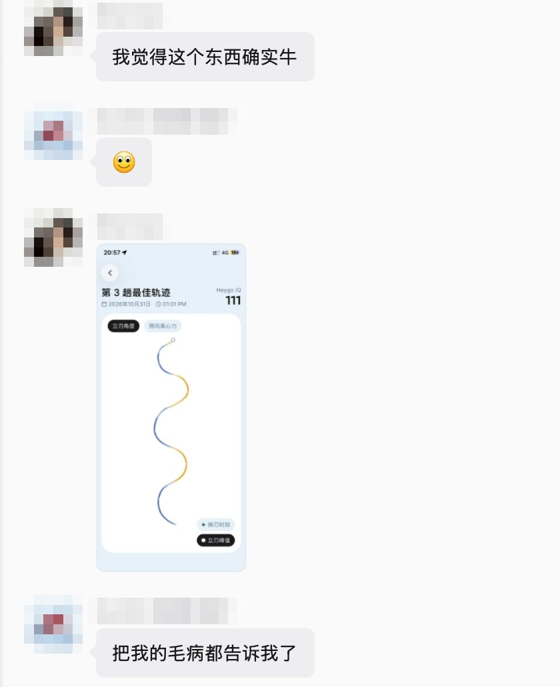
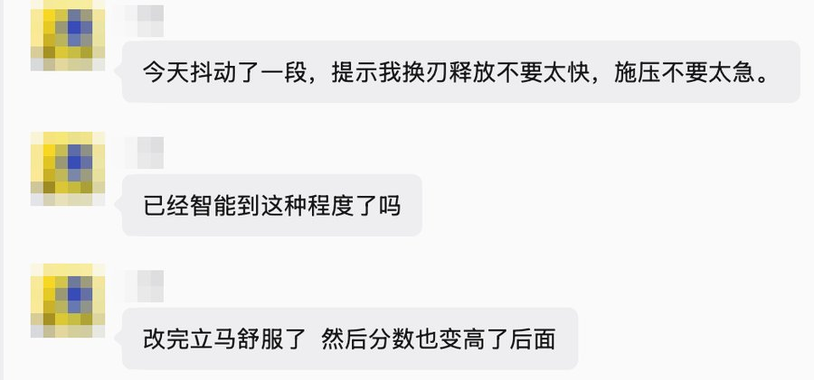
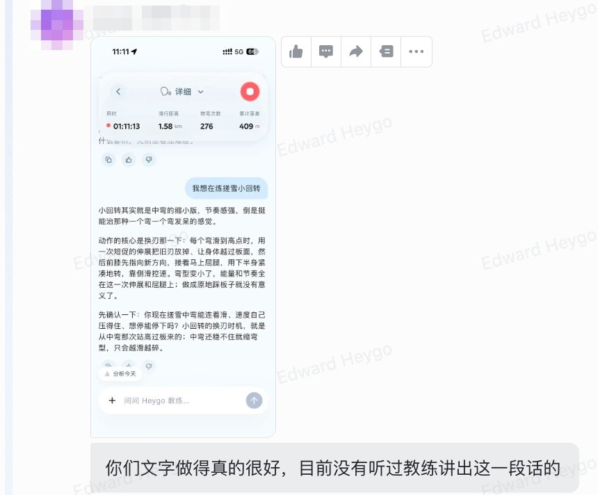
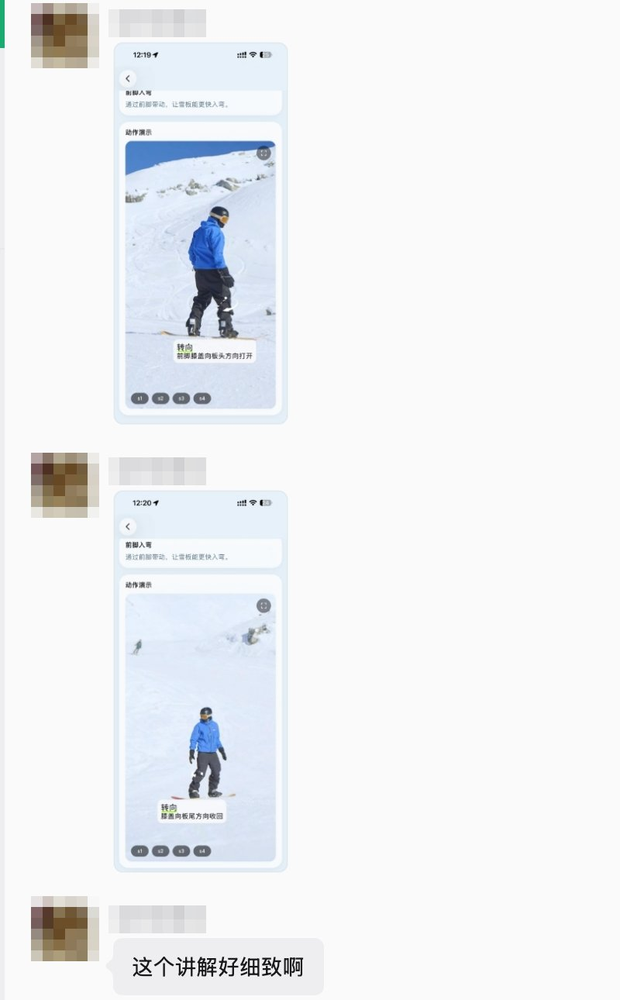
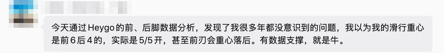
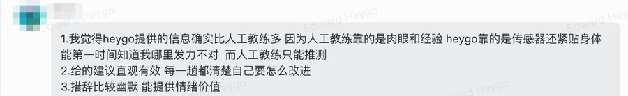
Heygo 从第一天就和教练、滑手一起做产品。共创滑手和我们一起推敲算法逻辑与产品指标。例如中回转弯型研究：用 511 个真实中回转，由三位教练和共创滑手两轮逐帧核对，定义了什么是合格的圆弯、「耐克弯」从哪里来，结论直接进入产品。可以看一份 滑手弯型分析示例。
俱乐部、雪校和教练团队是 Heygo 最重要的伙伴。我们希望 Heygo 成为俱乐部的教学工具和活动引擎：教练看得更清楚，会员练得更有目标，活动更有看点，俱乐部也多一份收入。
逐弯数据和弯型图让教练「看见」肉眼看不到的立刃、受力和节奏；课后学员自己滑，数据继续跟踪，课程效果可量化。
会员专属权益、IQ 排行和挑战赛，让会员每次上雪都有目标，持续回到俱乐部。
联合公开课、试滑日、刷分赛、开板活动；设备赞助、联名物料、双方社媒互推。
分销佣金、门店寄售 / 采购、一件代发等多种方式，全渠道统一控价，保护伙伴利润。
| 玩法 | 怎么做 | 适合谁 |
|---|---|---|
| 教练试用 + 内容共创 | 先给俱乐部教练佩戴体验；认可后由教练讲解 + 学员实测 + 产品使用，出小红书 / 抖音 / IG 内容，双方互标共创方 | 所有俱乐部、教练团队，通常是第一步 |
| 联合公开课 | 俱乐部教练授课，学员全员佩戴 Heygo；课后用弯型图和 IQ 逐人点评，课程前后分数对比一目了然 | 有教练和学员池的刻滑、技术类俱乐部 |
| 装备试用日 / 试滑日 | 在雪场或门店设体验点，会员现场佩戴、滑一趟、看报告，体验后可当场购买 | 有场地、有门店的俱乐部 |
| IQ 刷分挑战赛 | 按场景（刻滑 / 搓雪）设榜单，一段时间内比 Heygo IQ 最高分或进步最快，配奖品和联名海报 | 会员活跃、喜欢比拼的社群 |
| 开板 / 外滑活动赞助 | 俱乐部的开板、外滑、雪季活动，我们提供设备和物料赞助，对方做品牌露出 | 有固定活动节奏的俱乐部、高校雪协 |
| 分销 / 寄售 / 门店采购 | 用俱乐部的门店、电商或教练分销链接销售 Heygo，按约定比例分佣或拿差价；支持一件代发 | 有门店、电商、学员池的俱乐部和雪具店 |
| 数据共创 / 赛事量化 | 开放更深的数据，与高水平教练一起总结规律；在训练和比赛中做量化参考与数据展示 | 竞技队、协会、赛事方 |
具体权益、分成比例和设备数量，按俱乐部规模和合作深度单独商定。
线上电商直达，线下进入真实雪场。
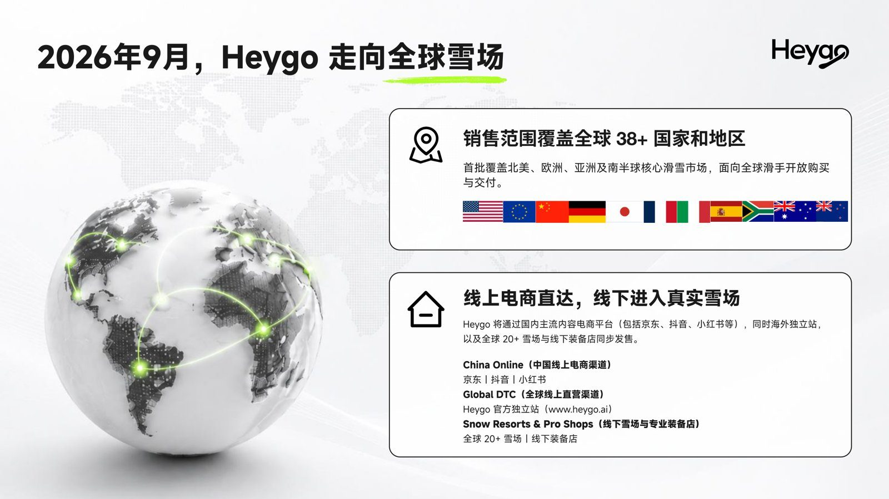
京东自营（含京东众筹首发）、天猫、小红书店铺、冷山（国内头部雪具垂直渠道）。
官网 heygo.ai 面向全球 38+ 国家和地区，支付、海外仓与物流全链路打通；首批订单来自美国、日本、加拿大、新加坡等市场。
俱乐部、雪场、雪具店、教练与协会、赛事、展会。
先把单板做到最深，再用同一套硬件进入双板市场（2027 年初上线 App 双板模式和日本版）。
从双脚两个节点扩展到全身多节点，覆盖更多板类与户外运动。
把运动数据和心率、睡眠、恢复数据打通，给出「今天怎么练、练多少」的运动处方。
i 黑马、体育大生意、极客公园、ChinaTravelNews 等相继报道；京东众筹上线获中国日报网、腾讯新闻、搜狐、网易、凤凰、哔哩哔哩等 20 余家媒体转载。
当前页面不支持直接跳转。复制链接后，粘贴到浏览器或微信里打开即可。